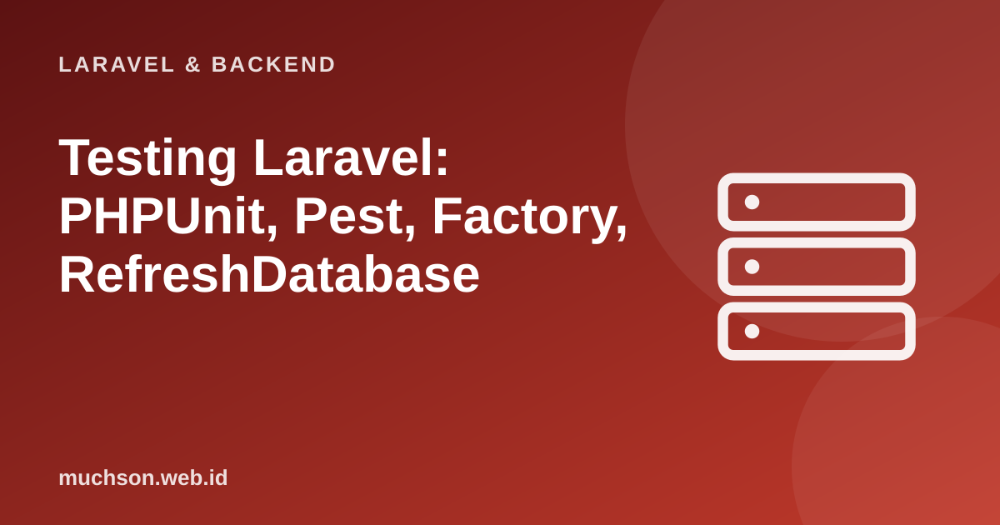

Beranda › Artikel › Laravel & Backend
Laravel & BackendTesting Laravel: PHPUnit, Pest, Factory, RefreshDatabase
Aplikasi yang tumbuh tanpa tes menjadi aplikasi yang ditakuti: setiap perubahan terasa berisiko. Laravel dibangun dengan pengujian sebagai warga kelas satu: ada basis data uji, factory data palsu, dan helper untuk memanggil rute seolah browser. Dengan sedikit pola, menulis tes menjadi cepat dan menyenangkan.
Sebaiknya sudah paham: dasar Laravel, Eloquent, REST API

Tujuan belajar
Setelah membaca dan mencoba materi ini, Anda mampu:
- membedakan tes unit dan tes fitur serta kapan memakai masing-masing
- menulis tes dengan PHPUnit dan Pest
- memakai factory dan RefreshDatabase untuk data uji yang bersih
- menguji halaman, form, validasi, API, dan otorisasi
- menerapkan siklus TDD dan mengelola mock dengan hemat
Tentang contoh kode
Kode PHP/Laravel di artikel ini mengikuti dokumentasi Laravel (versi 11 dan seterusnya, PHP 8.2 atau lebih baru). Bagian "cara kerja di balik layar" dijalankan sungguhan dengan Python atau JavaScript agar konsepnya dapat dibuktikan.
Tes unit vs tes fitur
| Tes unit (tests/Unit) | Tes fitur (tests/Feature) | |
|---|---|---|
| Cakupan | Satu kelas atau fungsi terpisah | Alur lengkap: permintaan HTTP sampai basis data |
| Basis data | Biasanya tidak | Ya (basis data uji) |
| Kecepatan | Sangat cepat | Lebih lambat tetapi lebih meyakinkan |
| Contoh | Menghitung diskon, memformat harga | Login, mendaftar, membuat pesanan, endpoint API |
| Saran | Untuk logika murni | Mayoritas tes aplikasi Laravel |
Menyiapkan lingkungan uji
# phpunit.xml: gunakan basis data khusus pengujian
<env name="APP_ENV" value="testing"/>
<env name="DB_CONNECTION" value="sqlite"/>
<env name="DB_DATABASE" value=":memory:"/> <!-- SQLite di memori: cepat dan terisolasi -->
php artisan test # menjalankan semua tes (ringkas dan berwarna)
php artisan test --filter=Pesanan
php artisan test --parallel # paralel untuk suite besarTes fitur pertama
<?php
// tests/Feature/PesananTest.php (gaya PHPUnit)
namespace Tests\Feature;
use App\Models\Produk;
use App\Models\User;
use Illuminate\Foundation\Testing\RefreshDatabase;
use Tests\TestCase;
class PesananTest extends TestCase
{
use RefreshDatabase; // skema dimigrasi ulang dan dibersihkan antar tes
public function test_pengguna_dapat_membuat_pesanan(): void
{
// Arrange: siapkan data
$user = User::factory()->create();
$produk = Produk::factory()->create(['harga' => 20000, 'stok' => 10]);
// Act: panggil rute sebagai pengguna yang login
$respons = $this->actingAs($user)->post('/pesanan', [
'produk_id' => $produk->id,
'jumlah' => 3,
]);
// Assert: periksa hasil
$respons->assertRedirect('/pesanan');
$this->assertDatabaseHas('pesanan', ['user_id' => $user->id, 'total' => 60000]);
$this->assertSame(7, $produk->fresh()->stok);
}
public function test_jumlah_melebihi_stok_ditolak(): void
{
$user = User::factory()->create();
$produk = Produk::factory()->create(['stok' => 2]);
$this->actingAs($user)
->post('/pesanan', ['produk_id' => $produk->id, 'jumlah' => 5])
->assertSessionHasErrors('jumlah');
$this->assertDatabaseCount('pesanan', 0);
}
public function test_tamu_diarahkan_ke_login(): void
{
$this->post('/pesanan', [])->assertRedirect('/login');
}
}Gaya Pest: lebih ringkas
<?php
// tests/Feature/PesananTest.php (Pest)
use App\Models\{Produk, User};
uses(Illuminate\Foundation\Testing\RefreshDatabase::class);
it('membuat pesanan dan mengurangi stok', function () {
$user = User::factory()->create();
$produk = Produk::factory()->create(['harga' => 20000, 'stok' => 10]);
$this->actingAs($user)
->post('/pesanan', ['produk_id' => $produk->id, 'jumlah' => 3])
->assertRedirect('/pesanan');
expect($produk->fresh()->stok)->toBe(7);
$this->assertDatabaseHas('pesanan', ['total' => 60000]);
});
it('menolak jumlah yang melebihi stok', function () {
$produk = Produk::factory()->create(['stok' => 2]);
$this->actingAs(User::factory()->create())
->post('/pesanan', ['produk_id' => $produk->id, 'jumlah' => 5])
->assertSessionHasErrors('jumlah');
});
// tes bertabel: satu logika, banyak data
it('memvalidasi surel', function (string $surel, bool $valid) {
$r = $this->post('/daftar', ['nama' => 'Ani', 'surel' => $surel, 'sandi' => 'rahasia123', 'sandi_confirmation' => 'rahasia123']);
$valid ? $r->assertSessionDoesntHaveErrors('surel') : $r->assertSessionHasErrors('surel');
})->with([['ani@contoh.id', true], ['bukan-surel', false], ['', false]]);Factory: data uji yang realistis
<?php
// database/factories/ProdukFactory.php
class ProdukFactory extends Factory
{
public function definition(): array
{
return [
'kategori_id' => Kategori::factory(), // buat kategori otomatis bila tidak diberikan
'nama' => fake()->words(2, true),
'harga' => fake()->numberBetween(5, 200) * 1000,
'stok' => fake()->numberBetween(0, 100),
];
}
public function habis(): static // "state": variasi bernama
{
return $this->state(fn () => ['stok' => 0]);
}
}
Produk::factory()->count(20)->create();
Produk::factory()->habis()->create();
User::factory()->has(Pesanan::factory()->count(3))->create(); // pengguna dengan 3 pesanan// Gagasan factory: data yang valid secara bawaan + kemampuan menimpa hanya yang relevan untuk tes
let seq = 0;
const fabrikProduk = (timpa = {}) => ({ id: ++seq, nama: 'Produk ' + seq, harga: 20000, stok: 10, ...timpa });
const biasa = fabrikProduk();
const habis = fabrikProduk({ stok: 0 });
console.log(biasa, habis);
// Tes yang fokus: hanya mengatur data yang penting bagi skenario
function bisaDibeli(produk, jumlah) { return produk.stok >= jumlah && jumlah > 0; }
console.log('stok cukup ->', bisaDibeli(fabrikProduk({ stok: 5 }), 3));
console.log('stok kurang ->', bisaDibeli(fabrikProduk({ stok: 2 }), 3));
console.log('jumlah nol ->', bisaDibeli(fabrikProduk(), 0));{ id: 1, nama: 'Produk 1', harga: 20000, stok: 10 } { id: 2, nama: 'Produk 2', harga: 20000, stok: 0 }
stok cukup -> true
stok kurang -> false
jumlah nol -> falseMenguji API
<?php
public function test_daftar_produk_terpaginasi(): void
{
Produk::factory()->count(30)->create();
$this->getJson('/api/v1/produk')
->assertOk()
->assertJsonCount(15, 'data')
->assertJsonStructure(['data' => [['id', 'nama', 'harga']], 'meta' => ['total'], 'links']);
}
public function test_hanya_pemilik_boleh_mengubah_pesanan(): void
{
$pesanan = Pesanan::factory()->create();
$lain = User::factory()->create();
$this->actingAs($lain, 'sanctum')
->putJson('/api/v1/pesanan/' . $pesanan->id, ['catatan' => 'x'])
->assertForbidden(); // 403
}Mock: sedikit dan hanya di perbatasan
<?php
use Illuminate\Support\Facades\{Mail, Queue, Http};
use App\Jobs\KirimSurelSambutan;
public function test_pendaftaran_mendispatch_job_sambutan(): void
{
Queue::fake(); // tidak benar-benar mengantre, hanya mencatat
$this->post('/daftar', [...]);
Queue::assertPushed(KirimSurelSambutan::class);
}
public function test_klien_cuaca_menangani_kegagalan_layanan(): void
{
Http::fake(['api.cuaca.id/*' => Http::response([], 500)]); // layanan luar tidak dipanggil sungguhan
$this->assertNull(app(LayananCuaca::class)->suhu('Madiun'));
}TDD: merah, hijau, rapikan
Latihan mandiriCoba kerjakan dulu sebelum membuka jawaban.
1. Tulis tes: pengguna yang belum login tidak bisa membuka /dasbor.
$this->get("/dasbor")->assertRedirect("/login");2. Mengapa tes sebaiknya tidak bergantung pada urutan eksekusi?
Tes yang saling bergantung gagal acak dan sulit dilacak; RefreshDatabase dan factory membuat tiap tes mandiri.
3. Kapan memilih tes unit dibanding tes fitur?
Untuk logika murni tanpa kerangka kerja (perhitungan, pemformatan); tes fitur untuk alur yang melibatkan HTTP dan basis data.
4. Bagaimana mereproduksi bug "pesanan dengan jumlah 0 lolos" dalam tes?
Tulis tes yang mengirim jumlah 0 dan mengharapkan galat validasi; ia gagal dulu (merah), lalu perbaiki validasi.
Ringkasan
- Tes fitur menguji alur lengkap; tes unit untuk logika murni; Laravel menyediakan basis data uji dan helper HTTP.
- PHPUnit dan Pest berjalan lewat php artisan test.
- Factory dan RefreshDatabase memberi data bersih dan terisolasi; pola Arrange-Act-Assert.
- Fake hanya untuk layanan eksternal; TDD dan tes regresi menjaga kualitas seiring waktu.
Tanya jawab
Pest atau PHPUnit?
Pest dibangun di atas PHPUnit dengan sintaks ringkas dan fitur modern; pilih sesuai selera tim, keduanya bisa dicampur.
Bagaimana menguji tampilan Blade?
Dengan $this->get(...)->assertSee("teks"); untuk interaksi JavaScript gunakan Laravel Dusk atau Playwright.
Berapa cakupan yang wajar?
Fokus pada jalur kritis dan logika bisnis; angka cakupan tinggi tanpa asersi bermakna tidak menjamin kualitas.